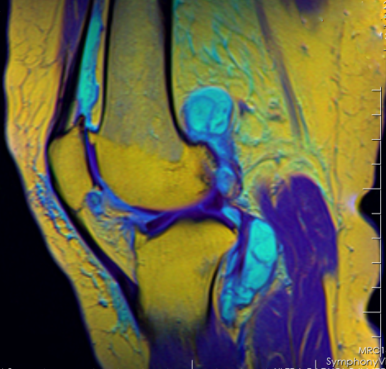

Ficha del catálogo
Resonancia magnética de rodilla
- Sistema
- Óseo
- Modalidad
- RM
- Región
- Rodilla
- Dificultad
- Avanzado
La resonancia magnética es el estudio de elección para las partes blandas de la rodilla. Muestra meniscos, ligamentos cruzados y colaterales, cartílago articular, tendones y el hueso subcondral, ninguno de los cuales se valora en radiografía simple.
Técnica
Se adquieren cortes en los tres planos (sagital, coronal y axial) con secuencias potenciadas en T1, T2 y densidad protónica con supresión grasa, usando una antena específica de rodilla.
Qué observar
- Meniscos: Estructuras triangulares uniformemente negras (hipointensas); una señal brillante que alcanza la superficie articular indica rotura
- Ligamento cruzado anterior: Banda de fibras continuas y tensas dirigidas hacia arriba y atrás
- Ligamento cruzado posterior: Banda gruesa, homogénea y curva
- Cartílago articular de grosor uniforme y superficie lisa
- Edema óseo: Señal brillante dentro del hueso en secuencias con supresión grasa, marcador de contusión reciente
- Derrame articular: Líquido brillante en T2 distendiendo los recesos
Hallazgos
Estudio de rodilla donde se identifican fémur, tibia, rótula, meniscos y ligamentos con señal e integridad conservadas.
Perlas
Los patrones de edema óseo cuentan el mecanismo de la lesión. En la rotura del ligamento cruzado anterior aparece un edema típico en el cóndilo femoral lateral y en la meseta tibial posterolateral, incluso cuando el ligamento se ve difícil de evaluar.
Diagnóstico diferencial
- Degeneración mucoide del menisco
- La señal intrameniscal es globular o lineal pero no alcanza la superficie articular, a diferencia de la rotura, que contacta con la superficie en al menos dos cortes.
- Rotura del ligamento cruzado anterior
- Las fibras aparecen discontinuas, onduladas o ausentes, con aumento de señal en su interior y signos indirectos como el patrón típico de edema óseo y la traslación anterior de la tibia.
- Lesión del ligamento colateral medial
- Se ve edema y engrosamiento superficial en el trayecto del ligamento a lo largo del margen medial, con integridad o no de sus fibras según el grado.
- Condropatía y artrosis
- Predominan el adelgazamiento y las fisuras del cartílago con edema subcondral y osteofitos, sin señal lineal que atraviese el menisco.
- Fractura por insuficiencia subcondral
- Se identifica una línea hipointensa subcondral paralela a la superficie articular rodeada de edema medular extenso, en un paciente mayor y sin traumatismo relevante.
- Quiste de Baker y otras colecciones
- Aparecen como colecciones bien delimitadas y brillantes en secuencias potenciadas en T2, en la localización característica entre el gastrocnemio medial y el semimembranoso.
Simuladores
- El ángulo mágico produce aumento de señal falso en tendones y en el cuerno posterior meniscal cuando las fibras forman unos 55° con el campo magnético (se reconoce porque desaparece en secuencias de eco largo).
- El ligamento transverso intermeniscal y el hiato poplíteo generan interrupciones normales del contorno meniscal que se confunden con roturas.
- El artefacto de desplazamiento químico y las pulsaciones vasculares crean líneas brillantes que simulan lesiones (su orientación en el eje de codificación de fase los delata).
- Los focos normales de médula ósea hematopoyética y las islas óseas pueden confundirse con edema o con lesión focal si no se valoran en varias secuencias.
Por modalidad
- RM
- Estudio de referencia para meniscos, ligamentos, cartílago, tendones y médula ósea, y única técnica que muestra el edema óseo postraumático.
- RX
- Sigue siendo el primer paso: Valora alineación, fracturas evidentes, espacio articular y calcificaciones, e interpreta el contexto de la resonancia.
- TC
- Complementa en fracturas complejas y en cuerpos libres osificados, y es alternativa cuando la resonancia está contraindicada, sobre todo con artrografía.
- US
- Aporta valoración dinámica y de superficie de tendones y bursas y guía procedimientos, aunque no valora el interior de la articulación.
Protocolo
Se emplea una antena específica de rodilla con el paciente en decúbito supino, la rodilla en extensión casi completa y una rotación externa de unos 15° que ayuda a desplegar el ligamento cruzado anterior en el plano sagital. Se adquieren secuencias potenciadas en densidad protónica o T2 con supresión grasa en los tres planos, más una secuencia potenciada en T1 para la médula ósea, con cortes finos y campo de visión reducido. El gadolinio no es necesario de rutina y se reserva para tumores, infección o para diferenciar recidiva de tejido cicatricial; la artrorresonancia con contraste intraarticular se usa en el menisco ya operado.
Clasificación
La señal meniscal se gradúa en tres niveles: Grado uno cuando es globular y no toca la superficie, grado dos cuando es lineal pero tampoco la alcanza, y grado tres cuando contacta con la superficie articular, que es el único que corresponde a rotura. Las lesiones condrales se describen con escalas tipo Outerbridge, que van desde el reblandecimiento y las fisuras superficiales hasta la pérdida completa del cartílago con hueso subcondral expuesto. Las lesiones ligamentarias se gradúan en tres niveles según haya distensión, rotura parcial o rotura completa.
Errores frecuentes
- Informar rotura meniscal por una señal que no contacta claramente con la superficie articular o que aparece en un solo corte.
- Confundir las variantes normales del hiato poplíteo y del ligamento intermeniscal con roturas del cuerno posterior.
- No aprovechar los signos indirectos, como el patrón de edema óseo, cuando el ligamento cruzado no se visualiza bien.
- Valorar el menisco operado con criterios de menisco nativo, ya que la señal alterada persiste tras la cirugía y exige artrorresonancia para decidir si hay recidiva.

resonancia rodilla menisco ligamento cruzado cartilago partes blandas edema oseo